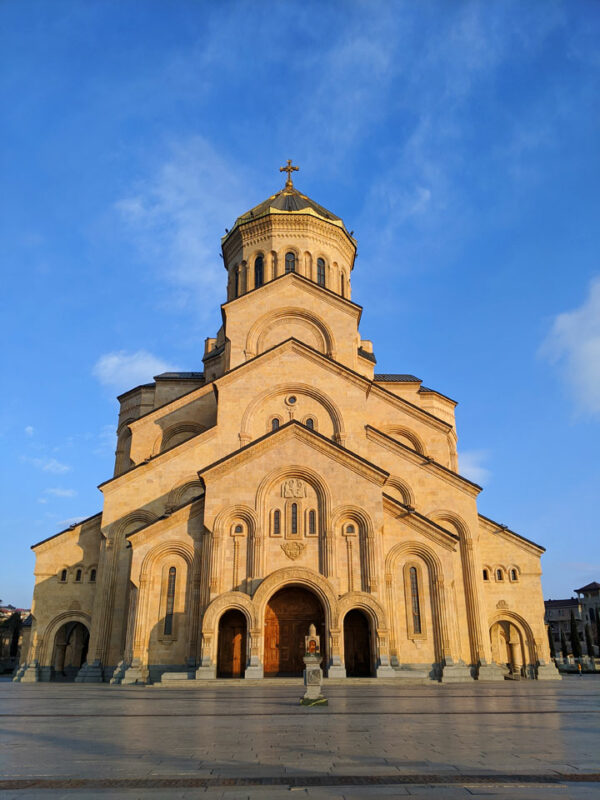
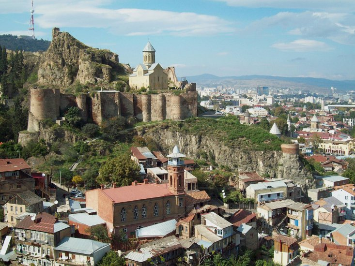
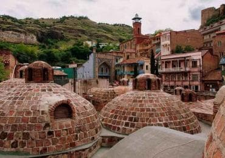

Holy Trinity Cathedral of Tbilisi
Sameba: Georgian Orthodox Church's cathedral in Tbilisi, world's third-tallest Eastern Orthodox church, built from 1995-2004 with traditional and Byzantine-style architecture.

Narikala Fortress
Narikala is a historic fortress on a hill in Georgia with two walls and a restored St. Nicholas church showcasing frescoes of biblical scenes and Georgian history.

Abanotubani
Abanotubani: historic area on the east bank of Mtkvari River where hot springs were discovered after King Gorgasali's falcon fell, leading to a new capital.